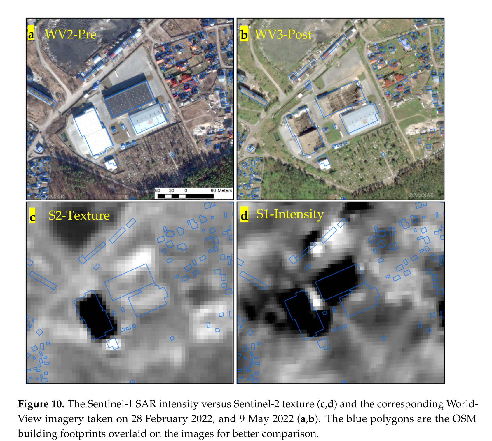

6 Classification I
6.1 Summary
Images classification is one of the main outputs, we try to achieve when analysing satellite images. Classification turns a satellite image into a schematic map showing different land use or land cover types. Essentially, it means labeling each pixel of the selected image bands as a categorical variable.
There are different types of classification that we will look at over this and next week: Classification can be
supervised or unsupervised classification, and
pixel based or object-based. Object-based classification is covered next week.
6.1.1 Supervised Classification
In supervised classification a predefined training data set is used where labels are known. The training data serves as a reference to train a classifier algorithm to recognize patterns in land cover or land use in the rest of the data set. Once trained it is tested on a subset of the data, the test data, to assess its accuracy. The workflow for supervised classification in GEE is broadly:
1. Select an image.
2. Collect training data.
3.Select and train a classifier using the training data.
4.Classify the image using the selected classifier.
Jeffrey A. Cardille et al. (n.d.)
Random Forest is a supervised machine learning algorithm used for classification and regression. It creates numerous decision trees during the training phase. Each decision tree is built using a random subset of the training data and a random subset of the input features. Each tree contributes to the final prediction of classes, and the mode or mean of these predictions is taken as the overall output. As descibed by Ha et al. (2022), its is this combination of different classification options that makes predictions robust. They explain that a random forest algorithm has four main steps:
randomly select the sample from the dataset;
construction of decision trees for each sample;
vote for the predictions;
determination of the decision trees with the most votes.
knitr::include_graphics('figures/w6p2.png')6.1.2 Unsupervised Classification
Unsupervised classification works the other way around. The classes are grouped first based on the data, using a self-taught algorithm, and then categorized into clusters. There is no reference data, where we know what category it is, in this case. The typical work flow us as follows:
Assemble features with numeric properties in which to find clusters (training data).
Select and instantiate a clusterer.
Train the clusterer with the training data.
Apply the clusterer to the scene (classification).
Label the clusters.
Jeffrey A. Cardille et al. (n.d.)
6.2 Application
This week, I explored the application of remote sensing analysis in damage assessment in war. The damage of buildings and civil infrastructure is a specific form of violence in war, often deployed strategically, with devastating impact on civilian populations. With family members killed or injured, homes and livelihoods destroyed, commnity and public service infrastrcutre spaces damaged, people are often left with no other choice than to flee. Monitoring destruction of buildings is therefore important for understanding the dynamics of war, detecting war crimes, providing targeted humanitarian assistance and preparing for reconstruction and recovery.
Traditionally, damage assessments are conducted through a mix of ground observation and testimony and manual visual classification from high resolution satellite images. This is cost, labor and time intensive. Current research explores (1) how to use machine learning based classification and (2) how to use publicly available data sources for detecting building damage in conflict zones to offer approaches that are faster, more accessible and simplementable at scale. One of the key methodological challenges is that classes (no damage vs damage) are really unbalanced because even after intense attacks, only very few show damage even after a large scale attack and that destruction occurs over time. (“Monitoring War Destruction from Space Using Machine Learning” n.d.)
Let’s look at two recent studies from Syria and Ukraine.
6.2.1 Damage Assessment in Syria using machine learning
“Monitoring War Destruction from Space Using Machine Learning” (n.d.) use high resolution data of three Syrian cities and applies machine learning technique to detect building damage over time. They use a two stage classification process which feeds data first to a Convolutional Neural Networks (CNN) and then passes it through a random forest. To get a rough understanding of CNN, watch the video linked below. The CNN generates labels and predicted values for each pixel that are then used to train a RF model to generate a prediction for the test sample. The two steps are needed because building damage is both spatially as well as structurally auto-correlated and hence using just a RF would lead to over fitting of the model. While this approach is techncially quite complex, it is very useful because the machine learning approach makes it applicable in conflict regions anywhere and scaling it doesnt come with significant extra costs.
knitr::include_graphics('figures/w6p3.png')However, a major issue with this approach is that it may be overfitting. When they are doing the test / train split, they are doing this within each of the 6 Syrian cities. This is not how a model would be used in practice. What is more likely is that a model is trained on a specific city in Syria and then used in a new city, e.g. Gaza. The model performs well because a test point and a training point in the same city will be very similar. This has been discussed in the lecture 10 and we will look at a different approach in week 10 using SAR data.
6.2.2 Damage Assessment in Ukraine using public data sources
Aimaiti et al. (2022) use a completely different approach for detecting buidling distruction in Kyiv Ukraine. The focus of their methodology is on testing how useful publicly available sattelite data can be for damage assessment.
The study tests two different approaches: 1. Sentinel 1 data applying a SAR log ratio of intensity (SAR = Synthetic Aperture Radar is a remote sensing technology that uses microwave radar to create high-resolution images of the Earth’s surface, regardless of weather conditions or time of day.) 2. Sentinel 2 data applying texture analysis
To support this approach, changes in other other land covers (e.g., forest) are suppresed using a mask for buit up areas based on OpenStreetMap building footprints and World Settlement Footprint (WSF). For assessing the accuracy of the approach the classification was manually verified by comparing findings with the official United Nations Satellite Center (UNOSAT) damage assessment map. The classification (combined from the two appriaches) achieved accuracy of 58%.
knitr::include_graphics('figures/w6p4.png')
This approach is useful, because it provides a low cost methodology for damage assessment. However, the accuracy rate is not very convincing. This approach may be useful for an initial rapid assessment. It is less useful as a baseline for planning humanitarian programmes, military action or reconstruction.
6.3 Reflection
This week was really fascinating!
First, it’s been great to start looking into machine learning and starting to grasp how classification works methodologically.
Secondly, I really enjoyed looking into the application area of conflict monitoring. I have previously conducted research in this field from a social science perspective. I looked at urban development in the West Bank and Refugee Housing in Berlin both from the perspective of critical theory and post colonial research. While it was brilliant to deeply understand these phenomena through theory, I always felt like my research was missing evidence and applicability in policy making. The studies discussed above are highly relevant for practitioners and provide a more objective evidence base for understanding war.
Two thinks struck me while digesting the studies discussed above:
1. Neither of them mentions Google Earth Engine, which surprised me. After last weeks lecture, I got the impression that nearly all studies now use GEE. I wonder why they chose not to use it here.
2. Both studies confirmed, again, the need to enrich remote sensing data with other contextual data sources.This seems to be emerging as a key learning from engaging with literature on very different use cases.
Add video from forensic architecture here!